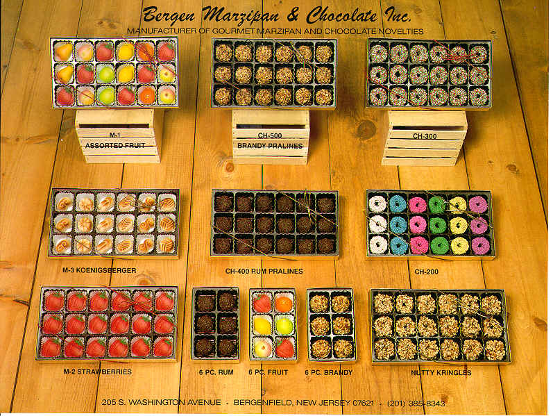

My father, Gunter Schott founded Bergen Marzipand and Chocolate in Berenfield, NJ, supplying stores big and small around the country, including Publix supermarkets in Florida, Venieros in the East Village in Manhattan, and Mike's Pastry in Boston. He sold both under his own label and those of other retail outlets. Below is a picture of some of his creations, all of which were made and air-brushed by hand. He was written up several times in local newspapers: e,g., the New York Times and the Bergen Record . He also was an excellent bread and pastry chef.
